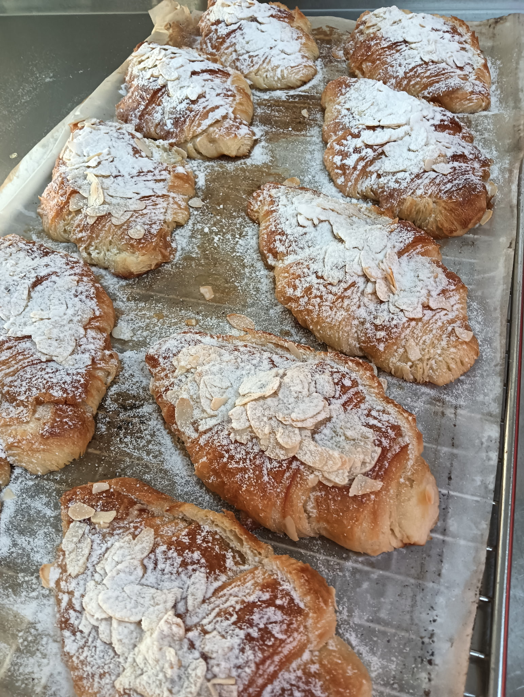
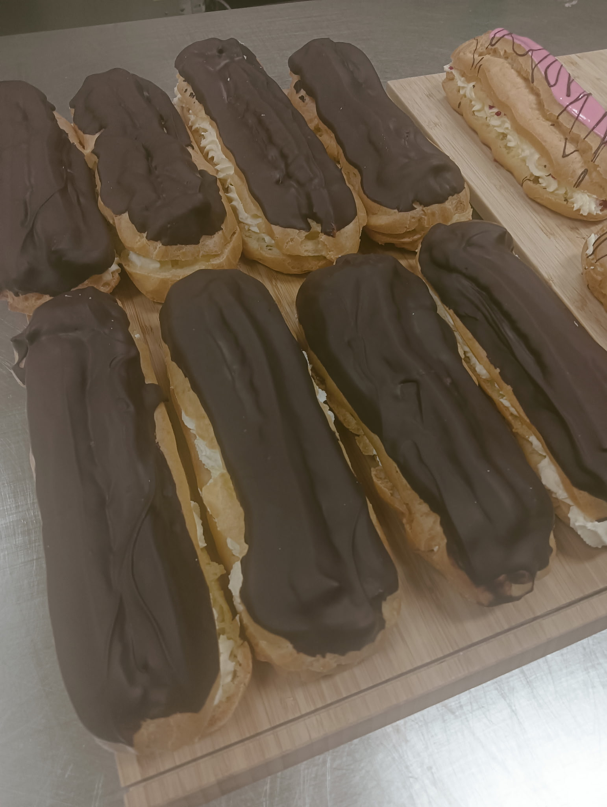
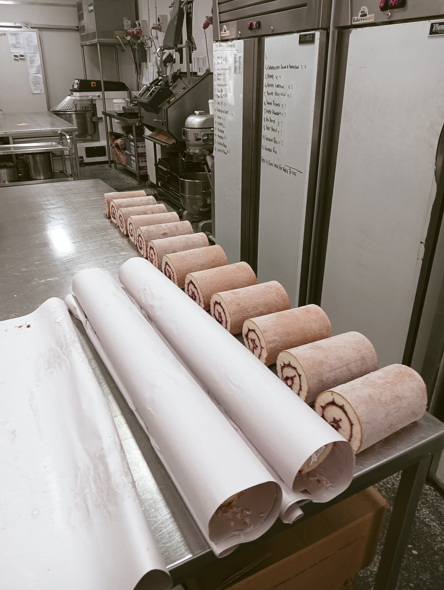

Bakery Formula Menu | Tested Pastry Methods | Victoria, Australia
A bakery menu that shows how the products are made.
Instead of listing finished items for purchase, this page turns Mark McKinnon's bakery range into a working menu of tried-and-tested products. Each item focuses on the dough, filling, bake, and finish needed to reproduce bakery-standard results.
Use this page as a practical guide to product builds, bakery standards, and the production thinking behind the range.

About The Range
These bakery items are presented as a make-it menu, not a buy-it list.
Mark McKinnon has spent more than two decades in commercial pastry and bakery production, building products that need to work every day on real bakery benches. This menu-style page reframes that experience into practical product guidance rather than a retail catalogue.
The focus is on proven structures and repeatable outcomes: good lamination, dry choux, balanced fillings, strong bake colour, clean finishes, and production notes that help a product hold up across a full bakery run.
Method
How the bakery range is built for repeatable production.
Strong products come from disciplined systems more than secret ingredients. The same thinking sits behind laminated lines, choux work, tarts, cheesecakes, and counter bakes.
- Lamination, choux paste, short crusts, and sponge or muffin batters need correct mix development before any finishing happens.
- Scaling, resting, and tray setup decide whether the product can be repeated across a full bakery run.
- If the base is weak, no garnish or glaze can recover the final result.
- Fillings must deliver flavour, hold shape, and sit cleanly inside the product or cabinet display.
- Moisture control matters as much as flavour because the wrong balance shortens holding time.
- Consistent fill weights make the product eat the same from the first tray to the last.
- The final appearance is part of the product specification, not an afterthought.
- Good production notes make the finish achievable by the whole bakery team, not only one baker.
- The best products look strong early in the morning and still eat well later in the day.
Why It Holds Up
Professional training backed by daily bakery repetition.
The menu is grounded in formal training, production discipline, and years of repetition across commercial pastry and bakery environments.
Training
William Angliss Institute
Formal pastry and baking training that supports practical product design, clean method, and bakery-ready finishing standards.
Foundation
20+ years of bakery and pastry production
- Commercial pastry production and workflow
- Recipe refinement for repeatable output
- Food safety and disciplined clean-down practice
- High-volume preparation and finishing
- Presentation standards that suit real cabinet trade
Production Standards
The bakery habits that sit behind every tried-and-tested product.
Lamination and lift
Clear layers, proper proof, and enough colour to make the pastry eat crisp rather than greasy.
Dry, reliable choux
Shells built to hold cream, glaze, and service time without collapsing or turning leathery.
Balanced fillings
Curds, creams, frangipane, and cheesecake mixes that taste full but still hold shape.
Controlled bake profile
Heat, colour, and internal set managed so the finish matches the intended product style.
Display-ready finish
Garnish placement, dusting, glaze, and portioning handled with the cabinet in mind.
Repeatable team use
Recipes and methods shaped so they can be followed consistently across bakery production.
Gallery
Additional bakery products from the working archive.
These images support the menu with more bench examples from the same production-focused library.


Contact
Recipe development and bakery production enquiries welcome.
Mark is available to discuss pastry production, subcontract bakery work, recipe refinement, and how to turn proven bakery items into repeatable menu lines.
- Phone
- 0421 960 632
- Location
- Victoria, Australia
- Focus
- Recipe development, commercial pastry production, bakery-ready product builds
- Availability
- Bakery support, subcontract work, and product development discussions